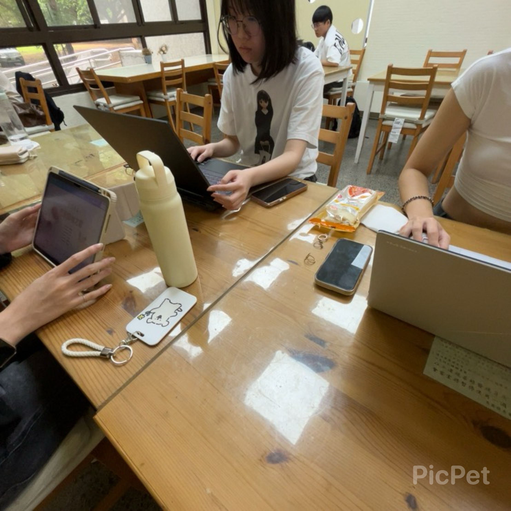
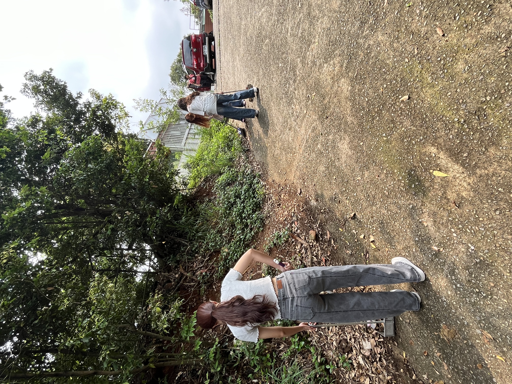
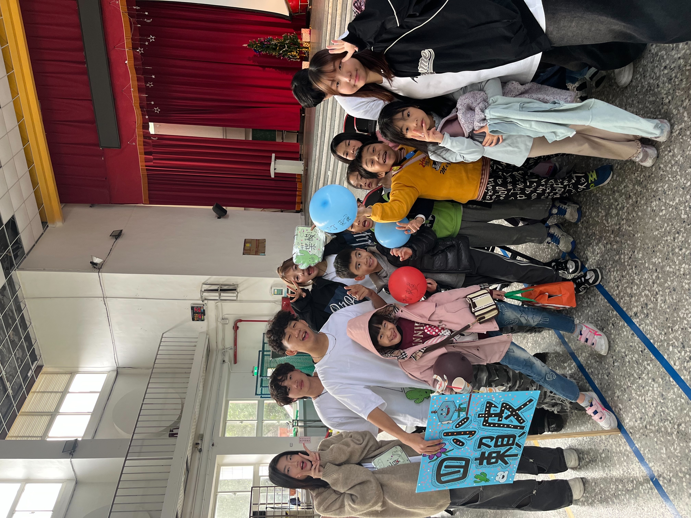

經歷 01：中原大學資管系專案開發
參與企業資料通訊與資訊系統雛形開發，運用物件導向觀念完成系統核心架構設計與演算法優化。
中原大學 資訊管理學系 | 個人專業履歷
具備扎實的資訊管理學術基礎與程式邏輯思維，熟悉 Java 程式設計、資料結構與網路通訊架構。在學期間注重理論與實作整合，樂於探索新技術並具備跨領域的企劃與分析能力。
參與企業資料通訊與資訊系統雛形開發，運用物件導向觀念完成系統核心架構設計與演算法優化。

參與流浪動物志工服務並統籌永續發展目標 (SDGs) 企劃推展，進行專案排程與現場跨協力溝通。

於去年寒假前往基隆參與社團返鄉服務，走入當地國小帶領學童進行營隊活動，負責活動規劃、團隊帶領與現場秩序引導，培養溝通協調與臨場應變能力。
